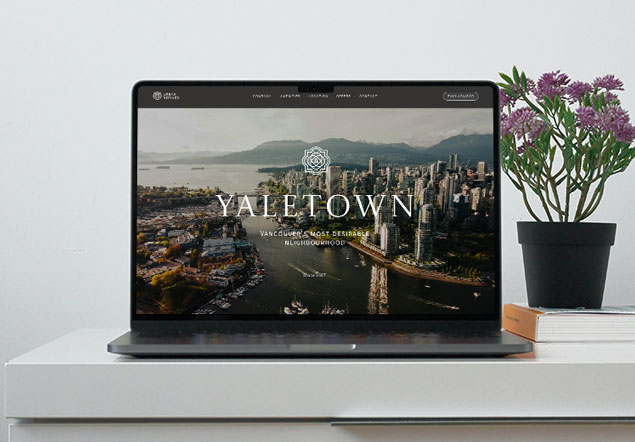
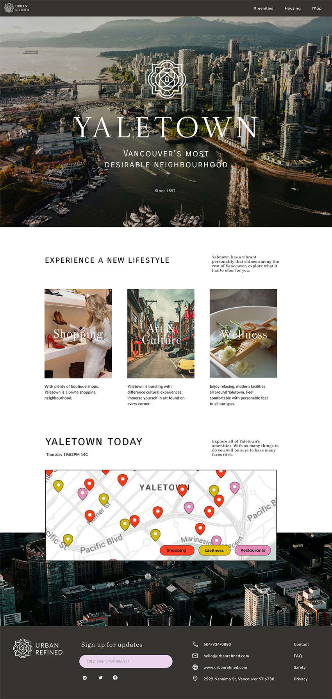
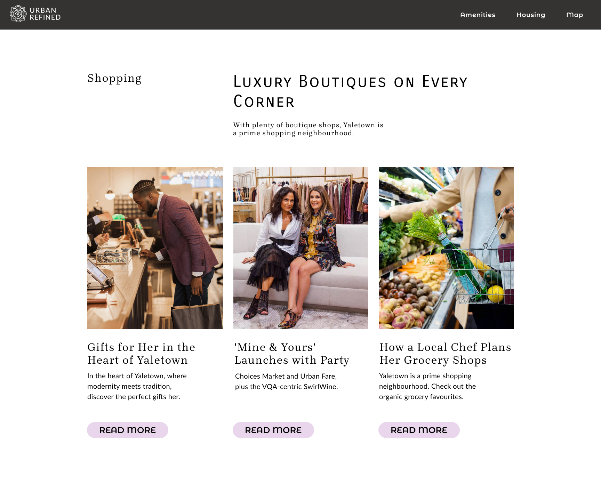
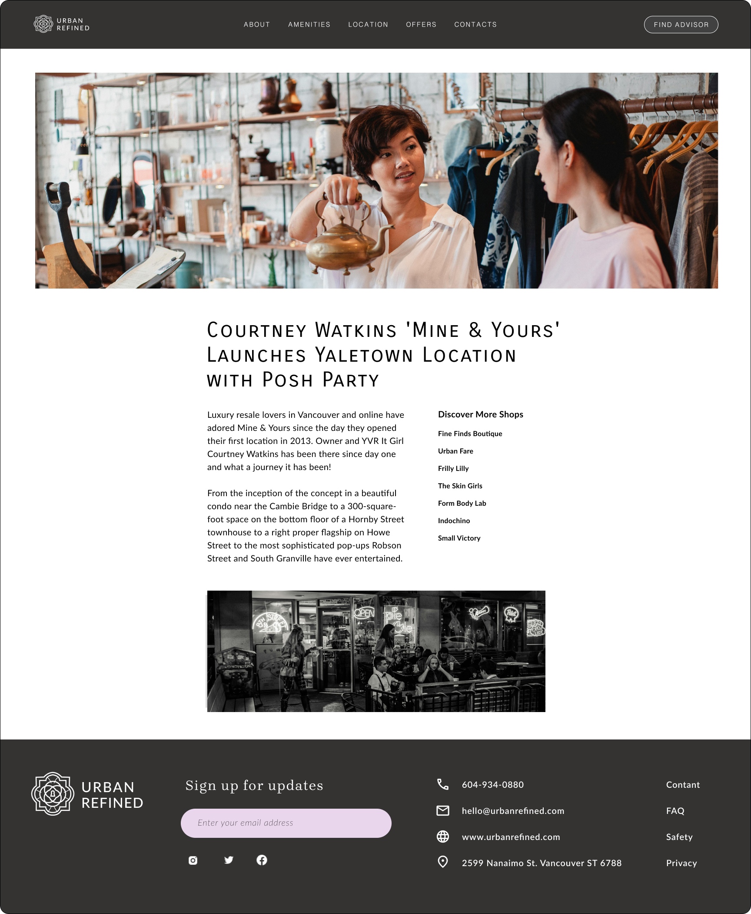

.gif)
Overview
Most cities have chic neighbourhoods that appeal to the style conscious in every areas of life. Urban refined showcases the luxury lifestyle and lively vibe of Vancouver’s Yaletown for people looking to elevate their own lifestyle. This was a mentorship project.

Oppurtunity
Yaletown is a modern city that can attract new residences if there was an elegant website for users to use. To create an online platform that embodies the essence of Yaletown's it is important to show off activities and opportunities to entice potential movers.
Research
I looked into the background of Yaletown. Yaletown is an area of Downtown Vancouver approximately bordered by False Creek and by Robson and Homer Streets. Formerly a heavy industrial area dominated by warehouses and rail yards, since Expo 86 it has been transformed into one of the most densely populated neighbourhoods in the city. The marinas, parks, high-rise apartment blocks, and converted heritage buildings constitute one of the most significant urban regeneration projects in North America.
Despite having more nightlife options, Yaletown is remarkably well-suited to young families as well, with many parks, the Roundhouse Community Centre, daycare and schools within its boundaries.
Competitors
I conducted research looking at different websites about Yaletown to decide where my website will fit into the market and how I can improve it using the pros and cons of other sites.


Oppurtunity
Yaletown is a modern city that can attract new residences if there was an elegant website for users to use. To create an online platform that embodies the essence of Yaletown's it is important to show off activities and opportunities to entice potential movers.
Solution
Yaletown is a modern city that can attract new residences if there was an elegant website for users to use. To create an online platform that embodies the essence of Yaletown's it is important to show off activities and opportunities to entice potential movers.

Landing Page
I designed the website to show off the unique lifestyle of Yaletown through interesting and personal stories. Highlighting and showing the features of Yaletown through stories so that it shows residents the opinions of the people living there already and how they feel about it.

Shopping Page
The shopping page shows off the selection of articles for each catergiry of Yaletwon's percs.
